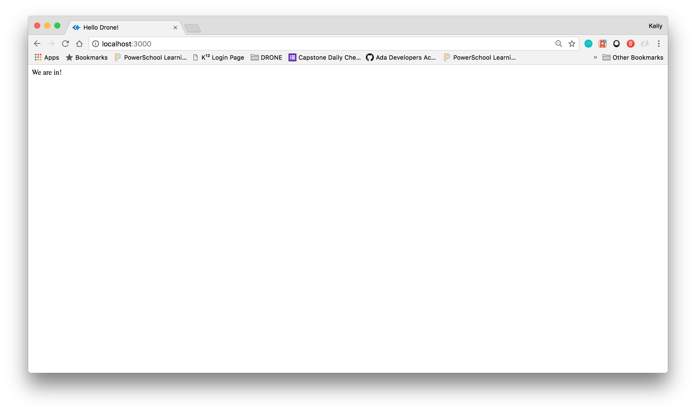

Approaching the last month of Ada Developers Academy, I was wracking my brain to think of a capstone project which would be both fun and educational. I mused to myself, 'when will I ever again have the opportunity to do any project of my choice with so much support?'
I went big and chose to program a drone. I mean, really, what more fun project could there be? What other project would have such rewarding and immediate feedback? Write some code, fly a drone! I thought it be great. And it was great, and not great, all at the same time.
Along with the usual struggles of a capstone, the time crunch, the hours and hours of research, I realized there was a problem which pervaded every step of the project from the very beginning. So much so, that I almost switched to a new project before I even began.
That problem is one which exists throughout the tech industry, and it is simply the lack of accesibilty to tech for people who are not already in tech. It is a catch 22. If you don't already know something, it is hard to learn anything about it.
I don't look to jump over 7-foot bars: I look around for 1-foot bars that I can step over. -Warren Buffett
Except there were no 1-foot bars...
While expressing all of this to my partner, my project hit a turning point when he looked at me and said, "Then why don't you bridge that gap? You be the one to build the turorial you needed, for the next person who comes along."
He is so right, and here we are...Overview
We will be using lots of tools to build an app, a server, and a front page with simple buttons to control the flight of your drone. We will also learn to stream the drone's video on it's own server and then to your front page.
This project will progress smoothest if you have a basic understanding of HTML, CSS, JavaScript and the ability to navigate the terminal. Even if you don't, you should be able to copy the code and understand the gist of what it is doing.
We will also be using several other tools and libraries, including, but not limited to Express, AR-Drone library, AR-Drone-Png-Stream library.
Don't worry too much about all the tools we will eventually need to use. We will discuss them in depth when we come to them.
We cannot take more than one step at a time. - Orison Swett Marden
I can't promise that the way I have set up everything in this drone is the best way ever, but that's the great thing about programming, there are a million ways to do everything.
Let's talk about the drone itself.
Hardware - About the Drone
After some amount of research into drones (I won't say a great deal of reasearch honestly), I chose the Parrot AR.Drone 2.0 for the hardware of this project.
I decided on this specific drone because it had all the required hardware, can be programmed with JavaScript (which I was pretty comfortable with) and was within my budget (on sale!).
The first thing I did when I got the drone home was put the battery on the charger while I set up my file. It takes about an hour and a half to fully charge the battery.
The drone assembly was quick and easy. There is a place on top of the drone for the battery to sit, held in by velcro straps and connected to the wires.
I chose to use the indoor body because I wanted to not destroy my drone blades, walls, or furniture. It slips on easily over the camera, then onto the drone.
While that battery charges, shall we set up our file?
Flight from a File
Overview
In this section, we are going to set up a javascript file install a library which will allow us to control the drone with a bit of code.
We will be using the following:
- JavaScript
- Atom (or any text editor of your choice)
- node
- node package manager (npm)
- node-ar-drone
First, go to the node package manager link and follow the instructions there to install it. The npm install includes node as well.
From here on out we will use npm to download the libraries we will need.
File Setup
In the terminal:
- mkdir <your directory name>
- cd <your directory name>
- touch app.js
- npm install ar-drone
Open the app.js file and paste in these lines
- var arDrone = require('ar-drone');
- var client = arDrone.createClient();
Your files should look like this:
Now we have a client, which is our drone. This is the place in which we can write code to tell the client what actions to perform. I would recommend poking aroung the ar-drone library and see if you can figure out how things work and what actions are available.
The next step is to write code to control the drone's movement from within the app but first, there is something very important we need to do.
Cap Max Altitude (a tale of caution)
When I first set up my file, I got ahead of myself and wrote a quick take off, turn, and land block of code and ran it. I didn't realize the default max altitude on the drone was 23.5 meters! The drone flew, with significant force, directly up into my ceiling and bounced around like a moth trying to find a window.
We should set the drone's max altitude to a reasonable number, and avoid flying your drone directly into the ceiling.
Open the test-Client.js file, you will find it in node_modules>ar-drone>test>unit
Change the altitudeMeters to the height you want (line 87 in the image below).
On that note, the drone's emergency shut-off maneuver is to flip it to a 90 degree angle, essentially tip it so the top is pointing at the wall.
Be careful though, I had welts on my thumbs for days from accidentally grabbing too close to the propellers.
Write Commands
Next we are going to write a few lines of code to tell our client what we would like it to do, as shown in the node-ar-drone library.
client.takeoff();
client
.after(5000, function() {
this.clockwise(0.5);
})
.after(3000, function() {
this.stop();
this.land();
});
All together it should look like this:
Fly Drone
And thats it! We can go to our teminal and, while in our project folder, type in node app.js, hit enter and the drone flies the pattern we gave it!
This is another point at which I would suggest checking out the documentation for the node-ar-drone library. Find out what maneuvers the drone can do. Play around with them a bit.
We will get to video stream and app front end next.
Video Stream
Are we ready to move on to the video stream?
Library Install
We will use npm to install the ar-drone-png-stream (LINK) library. In your terminal type in:
npm install ar-drone-png-stream
Update App
The next step is to require the library in our app.js file with the following:
require('ar-drone-png-stream')(client, { port: 8000 });
Here we are requiring the library, telling it which client we want to stream png images from and which port we would like to stream those images.
I do recommend commenting out the flight code, so we can temporarily stream video while drone is “on the ground.” It is optional, but I find it much easier to trouble shoot and work on a stationary drone.
If you chose to do so, your file should look like this:
We also need to install the http library because the ar-drone-png-stream requires it. In the terminal run npm install http.
So, let’s stream video. In the terminal run app.js. Open up your browser and go to http://localhost:8000 (because, as you know, we set up our client on port 8000)
You should have png images streaming in localhost:8000 and a bunch of numbers in your terminal.
Those numbers are coming from the ar-drone-png-stream/index.js file. See line 22 in the image below.
While you are there, let’s check out the code and see what it is doing. You will see this line of code:
png.on('data', sendPng);
This line says, when there is new png data, call the sendPng function. Within the sendPng function is res.write(buffer); , this line where the image is written to the page.
In much of society, research means to investigate something you do not know or understand. Neil Armstrong
Spend some time looking around in the ar-drone-png-stream folder, check out the readme, look around the index.js file, etc. It will always serve us well to understand the libraries we are using.
Building a Front End
Ready to have a front end and build buttons to control the drone?
Overview
In this section we are going to use Express, Socket.io, and http(which we met briefly in the previous section), to build an app front page with buttons to allow us to control our drone. We are also going to embed the png stream onto the page.
Library Install
First step is, as always, to install our libraries. In out termal, lets run these commands
npm install express
npm install socket.io
Express is a javascript framework. It is free, open source and minimal. Basically we will have the flixibilty to do what we want, and our project doesn't need much structure. We have no database, only one page, etc.
Socket.io is a JavaScript websocket library. We will discuss websockets in a bit when we start using it.
Create HTML Page
We also need make a new file called index.html, where we will put the html for our front page. In that file type in your basic html tags
In body of the html document, type in a message of your choice (I chose "we are in!"")
Update App
Let's go back to app.js and require the libraries we just installed. Note that we are also creating an app variable, which allows us to create an express app.
var express = require('express');
var app = express();
var server = require("http").createServer(app);
var io = require('socket.io').listen(server);
All together it should look like this.
Let's connect our app with our html. In app.js paste in this code:
app.get('/', function(req, res){
res.sendfile('index.html');
});
Notice the res. again. We are telling the app to send the index.html file when it receives a request to get the main app page '/'.
The next step, I think, would be to get the index.html to show up in our browser right? Well, we already created a server for our express app with the line
var server = require("http").createServer(app);
Now we can paste in the following code to let it know we want it to listen to port 3000. We also have added a console log, so we can see in our terminal what is happening.
server.listen(3000, function(){
console.log('listening on *:3000’);
});
Check in browser on http://localhost:3000 you should see your message.
And also in our terminal we should have our console log.
Congrats! You now have an app with a client side (front page) and server side (app.js), but whats next?
I guess we probably want to put things on that front page, like buttons, which will send commands to the app. Then we probably want to add functions in the app which will tell the drone what to do. That is great and all, but you are probably wondering how our client side communicates with our server side and visa versa.
Ah! Excellent question. Let's go over that next.
I think one of the easiest ways to handle what we need is with web sockets.
Web sockets basically allow for information to be passed back and forth from client side to server side. It is basically an open line of communication between the two. I like the explanation on the PubNub "What Are WebSockets?" page, largely because it contains graphics and graphics are great.
Luckily, we already installed and required socket.io. We even told it to listen to the server. Now we can get right to work.
The first step is to tell it what to do when someone connects and disconnects from the server.
Paste the following code between our app.get block and the server.listen block.
io.on('connection', function(socket){
console.log('A user connected');
socket.on('disconnect', function() {
console.log('A user disconnected');
});
});
It should look like this:
When we run the app, whe should also get our console logs.
I am going to walk you through creating the take off and land buttons and function. After that, you will be able to add any other functions you would like your app to have.
In the body of the html in the index.html file paste the following code:
<div id="message"> <br /></div> <button type="button" name="button" onclick="takeOff()">Take Off</button> <br /> <button type="button" name="button" onclick="land()">Land</button> <br />
We just created two buttons. Lets look at the Take Off button.
We are telling it when the button is clicked onClick, to call the takeOff() function. Same with the take off button and it's corresponding function.
We also created and empty div and gave it an id of "message" so we can display a message showing what function is being called.
If you want to start your app and look at the localhost page, you will see two buttons like this:

If you click them, it seems nothing happens. In reality we have buttons which call the non-existant functions takeOff() and land(), so perhaps we should create those functions.
First we need to include our socket.io scripts on our html page. After the </head> tag and before the <body> tag we will add the scripts.
The first one adds socket.io.
<script src=“/socket.io/socket.io.js”></script>
The second script creates client side functions to trigger server side functions (in app.js).
<script> var socket = io(); function takeOff(){ }; function land(){ }; </script>
Making progress!! Now we have two empty client side functions which are triggered when the corresponding button is pressed. If we consider what we want the functions to do, I can think of three things.
Most importantly, I want the function in the client side to tell the server side to do someting (like make the drone take off). We do this by telling the socket to "emit" a call to the server side.
socket.emit('takeOff');
I also want show a message on our page saying what the drone is (supposed to be) doing. We do this by getting the element we created with the id of "message" and setting the html to whatever we want.
document.getElementById('message').innerHTML = "taking off!";
The third thing, a personal preference, I like to console log something, so I can see in the console when the function has been called.
console.log("Flying");
After repeating the same process for the landing function, your index.html file should look something like this.
If we want to start up our app again and check functionality, your buttons would log the commands "taking off!" and "landing!" It also should show our message in the div when the button is pressed:
Our client side functions are working! They are emitting a call to the server side. Now let's build the functions in app.js which can tell the drone what we want it to do.
Lets start with our empty function to receive the call from the client side.
socket.on('takeOff', function () { }); socket.on('land', function () { });
This basically says, when you receive the "takeOff" call from the client side, do something. Remember way back when we first started we used client.takeOff(); to make the drone take off? Well, we are going to do it again, just within the functions this time. Same with client.land();
Simply paste those two lines into their corresponding functions.
I also like to add in a console.log("App Takeoff!") and console.log("App land!") so I know we are in the app functions. Below is a screen shot of my browser page and terminal at this point.
OK now that we have the understanding of how the socket works, add in the rest of the commands you might want (turn left, turn right, etc)
Embeded Video
Through all of this (building the express app) your server port 8000 should still be able to stream video while your port 3000 has the client side. It would be nice if we could see the video on the page with the buttons though, right?
Lets look at how to do that.
First let’s make another button in the index.html file
<button type="button" name="button" onclick="streamVideo()">Stream Video</button>
Also in index.html, let’s add a div where the video will go:
<div id="video"></div>
I also threw a couple line breaks in between, just so things are lined up a bit neater
Now the body of my html looks like this:
Now our button needs a function in the socket.io script to call. In the index.html file we will add a function.
function streamVideo(){
socket.emit('streamVideo');
document.getElementById('message').innerHTML = "Streaming Video!";
console.log("streaming");
document.getElementById('video').innerHTML = "<iframe width='640' height='360' src='http://127.0.0.1:8000/index.html'></iframe>";
};
The script portion of our index.html should look like this:
To round out the server side of this function, we will add a function in app.js.
socket.on('streamVideo', function () {
console.log('App video');
});Which simply logs ‘App video’ in the terminal.
Let’s try it out.
- connect to the drone
- run app.js in terminal
- open localhost:8000 and localhost:3000
- in localhost:3000 click the stream video button
- your video should show up in a box just under your stream video button
And now you have a drone which you can control from an app you built, while watching the video stream! Check out the drone features and make new buttons! Do flips! Do fun stuff!
Also feel free to style your page as you would like. I used bootstrap and my buttons are now much better.